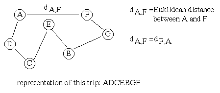

This thesis of diploma has been implemented in Java 1.1 in March 1998.
Find the shortest trip through n towns where each town must be visited exactly once.

In the following we define that from each town all other towns can be visited. The costs to visit a town from another are represented by their euklidic distance. Therefore the costs are reflexive.
A GA tries to use basic principles of natural evolution. It is especially appropriate for problems with large and complex search-spaces, where the global optimum can't be found within a reasonable amount of time using traditional techniques as e.g. total enumeration or branch and bound. It cannot be guaranteed that the optimum solution is found by the GA. Here are some references for GAs.
end;
A set of potential solutions are randomly initialized and their quality evaluated. Out of this set better solutions are preferred, corresponding to a probability distribution. Each time, two of the selected solutions creats new solutions by recombination which finally are mutated. These generated solutions are evaluated and represents the basis for the next generation. In this way a GA tries to find better solutions and to reach the global optimum.
In the "Options" menu, you can configure the following properties for the GA:
GA parameters:
Set Problem: A grid can be defined where the user can set the positions of the towns (4 - 100 towns).
Now its time to start the TSPGA. The applet should run on a www-browser supporting Java 1.1.
Click here:
Download the zipped thesis of diploma which includes the user documentation for this program (in German): ftp://tspgadoc.zip
Download the zipped class files and this html-page of TSPGA: ftp://tspga.zip
This program is used in the lecture "Evolutionäre Algorithmen" by Univ. Ass. Dipl.-Ing Dr. Günther Raidl of the Institute for Computergraphics on the Vienna University of Technology.
Page maintained by Johannes Sarg, March 1998